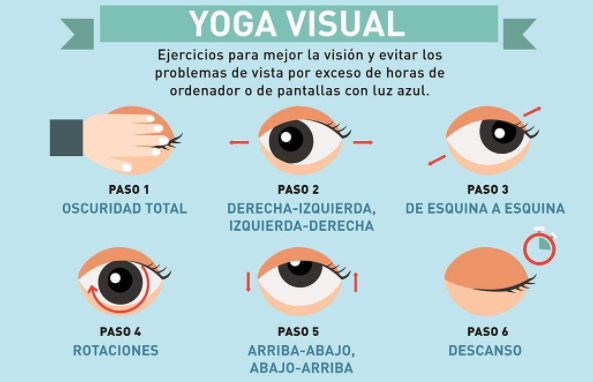

Pausas Activas Visuales
Fatiga ocular
Los casos de fatiga ocular van en aumento cada vez más debido al uso prolongado de aparatos electrónicos o por la exposición continua a las pantallas de los computadores. Es allí donde aparecen síntomas de malestar como picazón, enrojecimiento, lagrimeo, ojo seco e incluso hasta fuertes dolores de cabeza. Por esto, es importante que realices algunos ejercicios para descansar tus ojos, aliviar la fatiga y cuidar tu visión:
- Prepara tus ojos con masajes suaves: frota tus manos, la una con la otra, hasta que estén calientes. Luego pon las palmas sobre tus ojos y aprieta para liberar tensión. Masajea toda tu cara, incluye mejillas, cuello y ojos. Así estarán listos para comenzar con la rutina de ejercicios.
- Parpadea: durante 1 minuto con mucha frecuencia. Haz movimientos rápidos o lentos y deja los ojos cerrados por algunos segundos, este ejercicio normaliza la circulación sanguínea intraocular.
- Dirige tu mirada hacia diferentes direcciones: mueve los ojos de abajo hacia arriba (repite 6 veces). Mueve los ojos de izquierda a derecha (repite 6 veces).
- Realiza círculos con los ojos: primero de derecha a izquierda y viceversa, repite 6 veces, esto permite fortalecer los músculos oculares.
- Acerca y aleja el segundo dedo: no pierdas de vista el dedo mientras realizas el movimiento, repite 6 veces.
- Desvía tu atención por un momento para mirar por la ventana y apreciar un paisaje diferente.
- Usa entes antirreflejo, incluso si tu visión es 20/20. Así disminuirás los reflejos de luz.
- Realiza 5 minutos de pausas activas visuales por cada hora frente a tu computador.
- Si las molestias persisten, no dudes en consultar; esta es la alerta que te puede poner al tanto de que algo más puede estar sucediendo.
Yoga visual
PARA TU SALUD VISUAL SIGUE LAS SIGUIENTES RECOMENDACIONES:
- Procura que haya una distancia mínima de 60 centímetros entre la pantalla y tus ojos. Puedes estirar el brazo hacia el frente para tener una referencia.
- Gradúa el brillo de la pantalla entre un 70 a 80%.
- El borde superior de la pantalla debe dar a nivel de las cejas, para que la radiación sea menor y no tan directa sobre los ojos.
- Evita la iluminación amarilla y opta por la luz artificial blanca. Así evitarás esforzar demasiado la vista.
- Visita a tu optómetra por lo menos una vez al año.
- No toques los ojos con las manos sucias ni tampoco te los restriegues.